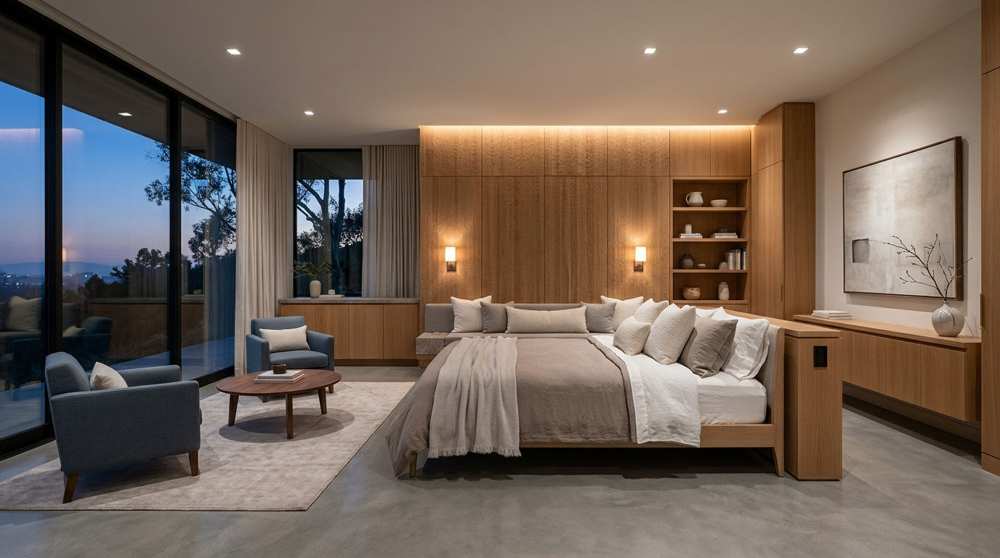
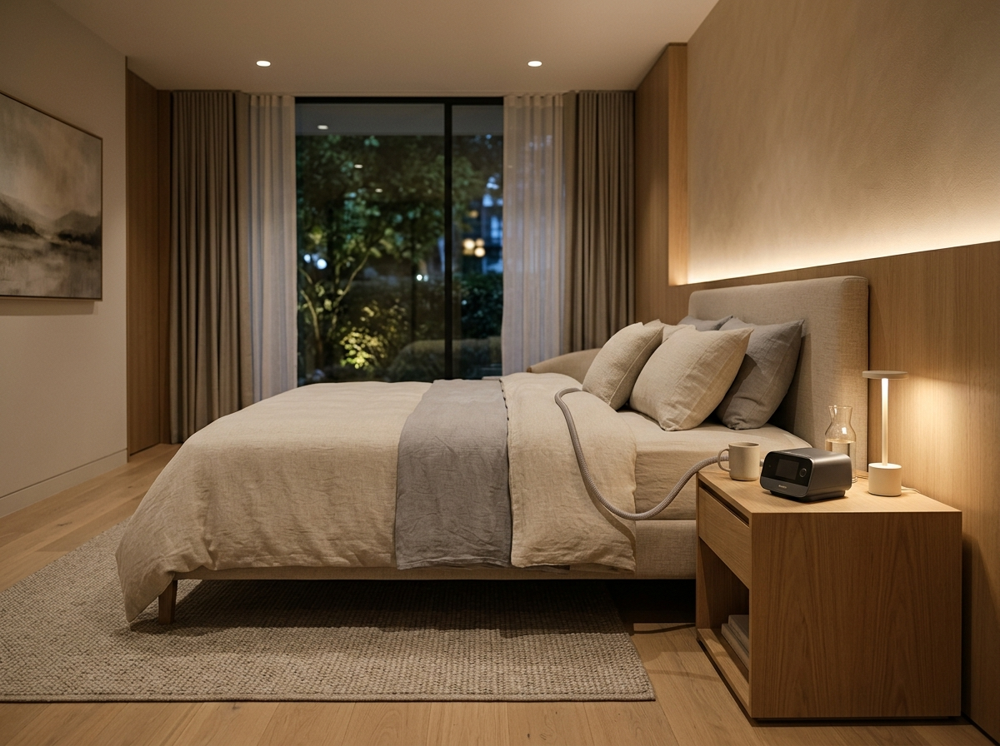
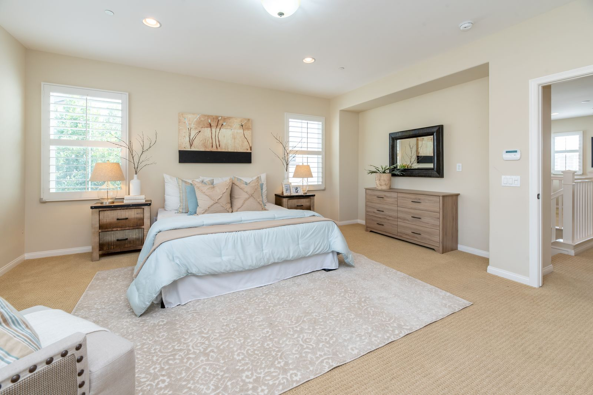

Better Sleep Starts
With Understanding.
Sleep architecture regulates cognitive clarity, daytime energy, and physical recovery. Our clinical evaluations and comprehensive sleep diagnostics help pinpoint the physiological foundations of disrupted rest.
Understanding Your Sleep Changes Everything.
Restorative sleep is not simply a period of inactivity; it is an active, essential physiological state that regulates neurocognitive consolidation, cardiovascular pressure, immune resilience, and metabolic balance. When sleep architecture is repeatedly disrupted, daytime fatigue is usually only the visible indicator of deeper underlying physiological stress.
Persistent Tiredness
Unrefreshed awakening, morning grogginess, or midday energy deficits despite adequate hours in bed.
Breathing Interruptions
Chronic loud snoring, witnessed gasping episodes, or nocturnal choking sounds noted by partners.
Sleep Initiation Difficulty
Racing cognitive thoughts, prolonged sleep latency, or inability to wind down at night.
Frequent Awakenings
Fragmented nocturnal sleep, nocturnal restlessness, or early morning awakenings with inability to fall back asleep.
Restorative sleep cycles support daytime cognitive clarity, cardiovascular health, and emotional resilience.
Sleep concerns are rarely isolated.
Understanding the pattern helps
guide the right conversation.
Sleep architecture is deeply interconnected. Rather than evaluating symptoms in isolation, our clinical team identifies the underlying physiological patterns across breathing, sleep architecture, and circadian regulation.

A Clear Path From Concern to Care.
Navigating sleep health should be straightforward and reassuring. Here is how our clinical team guides you through every step of diagnostic evaluation and treatment.
Consultation
Thorough review of your symptoms, nocturnal schedule, and medical background.
Sleep Assessment
Clinical screening of airway anatomy, sleepiness scale, and testing qualification.
Sleep Study
Attended overnight polysomnography or calibrated home testing kit.
Results & Review
Dedicated physician appointment to discuss your telemetry report and findings.
Treatment Plan
Individualized prescription: CPAP calibration, oral appliance, or CBT-I.
Follow-up
Continuous adherence monitoring, mask comfort checks, and ongoing sleep health.

Expertise Built Around Better Sleep.
Accurate diagnosis in sleep medicine requires detailed biometric interpretation, an understanding of upper airway dynamics, and close patient listening. Our clinical team evaluates each patient individually, avoiding generic recommendations in favor of evidence-based, customized medical solutions.
Polysomnography & Architecture Scoring
Direct physician analysis of sleep stages, arousals, and respiratory waveforms to diagnose complex sleep disorders.
Sleep-Disordered Breathing Management
Personalized CPAP and Bi-level titration for obstructive, central, and mixed sleep apnea syndromes.
Circadian Rhythm & Insomnia Protocols
Non-pharmacological clinical strategies tailored for shift workers, delayed sleep phase, and conditioned insomnia.

Start Understanding Your Sleep.
Whether you are concerned about persistent exhaustion, chronic snoring, or daytime sleepiness, our clinical sleep medicine team is here to help you regain restorative nights and energized days.